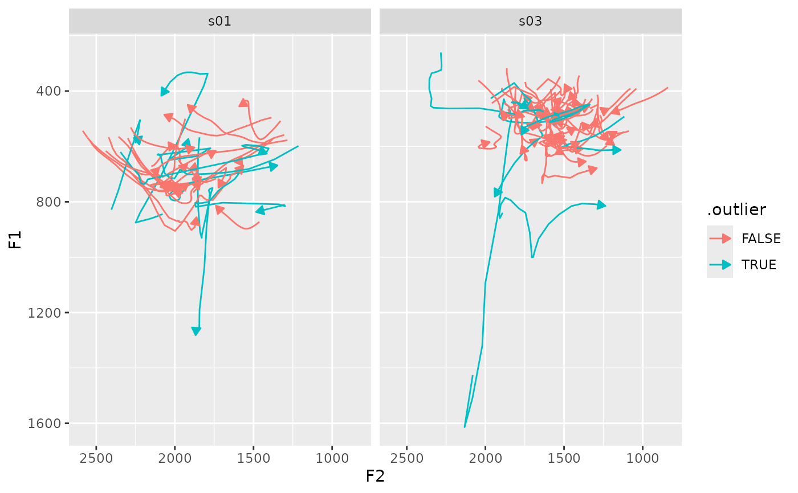
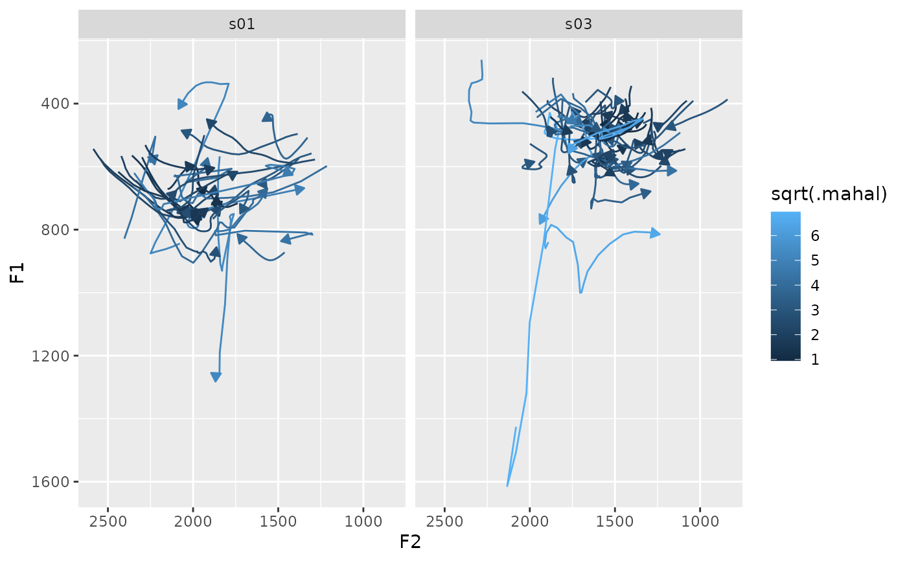
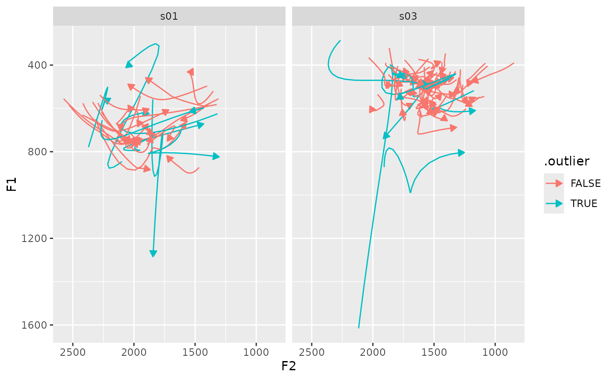

Identify Track Outliers
Usage
identify_track_outliers(
.data,
...,
.token_id_col,
.by = NULL,
.time_col = NULL,
.order = 5,
.level = 0.99,
.pre_trans = identity,
.return_dct = FALSE,
.call = caller_env(),
.silent = opt("tidynorm.silent")
)Arguments
- .data
A data frame containing vowel formant data
- ...
<tidy-select>One or more unquoted expressions separated by commas. These should target the vowel formant data columns.- .token_id_col
<data-masking>A column that identifies token ids.- .by
<tidy-select>A selection of columns to group by. Typically a column of speaker IDs.- .time_col
<data-masking>A time column. (optional)- .order
The number of DCT parameters to use.
- .level
Probability level above which tokens are labelled as outliers.
- .pre_trans
A function to apply to formant values before outlier detection.
- .return_dct
Whether or not to return the DCT coefficients with their marked outlier status.
- .call
Used for internal purposes.
- .silent
Suppress normalization information messages when running a
norm_*()function. (Defaults toFALSE, overwritable using option 'tidynorm.silent' or environment variable 'R_TIDYNORM_TIDYNORM_SILENT')
Value
The same data frame as input, with three additional columns.
- .mahal
The squared Malahanobis Distance (stats::mahalanobis)
- .prob
The the probability of
.mahalaccording to the chi-squared distribution with degrees of freedom equal to the number of data dimensions- .outlier
Whether or not
.probis greater than the probability level defined by .level
Examples
library(tidynorm)
library(dplyr)
ggplot2_inst <- require(ggplot2)
speaker_tracks |>
identify_track_outliers(
F1:F2,
.token_id_col = id,
.by = c(speaker, plt_vclass),
.level = 0.9
) ->
outliers_marked
#> ℹ No `.time_col` provided.
#> ℹ Assuming `.data` is arranged by time.
#>
#> Normalization info
#> • outliers identified along `F1` and `F2`
#> • grouped by `speaker` and `plt_vclass`
#> • outlier probability level: 0.9
#>
speaker_tracks |>
identify_track_outliers(
F1:F2,
.token_id_col = id,
.by = c(speaker, plt_vclass),
.level = 0.9,
.return_dct = TRUE
) ->
outliers_dct_marked
#> ℹ No `.time_col` provided.
#> ℹ Assuming `.data` is arranged by time.
#>
#> Normalization info
#> • outliers identified along `F1` and `F2`
#> • grouped by `speaker` and `plt_vclass`
#> • outlier probability level: 0.9
#>
if (ggplot2_inst) {
outliers_marked |>
filter(plt_vclass == "e") |>
ggplot(
aes(F2, F1, color = .outlier)
) +
geom_path(
aes(group = id),
arrow = arrow(
type = "closed",
length = unit(0.2, "cm")
)
) +
scale_x_reverse() +
scale_y_reverse() +
facet_wrap(~speaker)
}

if (ggplot2_inst) {
outliers_marked |>
filter(plt_vclass == "e") |>
ggplot(
aes(F2, F1, color = sqrt(.mahal))
) +
geom_path(
aes(group = id),
arrow = arrow(
type = "closed",
length = unit(0.2, "cm")
)
) +
scale_x_reverse() +
scale_y_reverse() +
facet_wrap(~speaker)
}

if (ggplot2_inst) {
outliers_dct_marked |>
filter(plt_vclass == "e") |>
reframe_with_idct(
F1:F3,
.token_id_col = id,
.by = speaker
) |>
ggplot(
aes(F2, F1, color = .outlier)
) +
geom_path(
aes(group = id),
arrow = arrow(
type = "closed",
length = unit(0.2, "cm")
)
) +
scale_x_reverse() +
scale_y_reverse() +
facet_wrap(~speaker)
}
#> ℹ No `.param_col` provided.
#> ℹ Assuming `.data` is arranged by parameter.
#>
